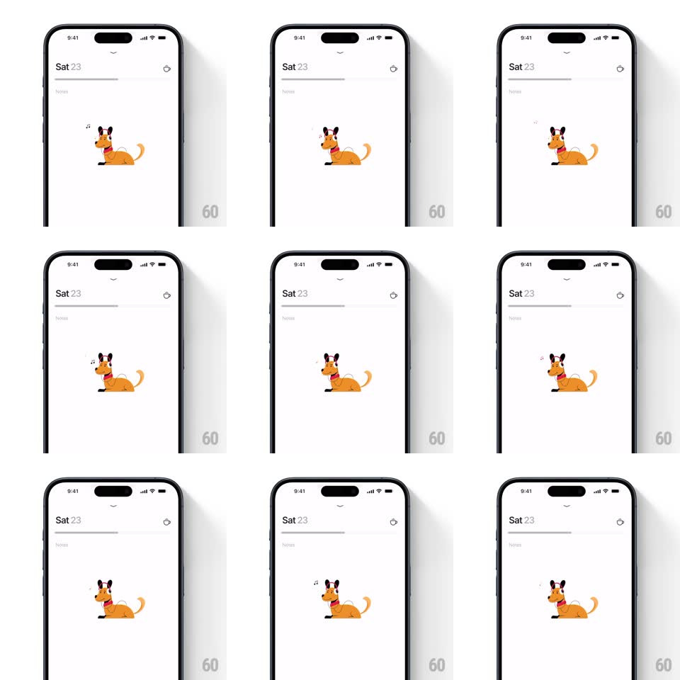

Media
Frame-by-frame

Rebuild this interaction 1:1: Persist's rest day empty state - marking the day as a rest day clears the task area and drops in a looping illustration of an orange dog lying flat with red headphones on, tail wagging, while tiny music notes drift above it.

Rebuild this interaction 1:1: Persist's rest day empty state - marking the day as a rest day clears the task area and drops in a looping illustration of an orange dog lying flat with red headphones on, tail wagging, while tiny music notes drift above it. ## Integration Integration: stack-agnostic spec - springs given as stiffness/damping, timed motions as duration + curve; map every value to your framework and animation library of choice. ## Scene Persist's white day page: "Sat 23" header with chevron, a small rest-day icon at the right, an empty progress bar, and the list area replaced by the illustration: a flat-style orange dog lying on its belly, red headphones over its ears, eyes closed, tail mid-wag. ## Motion spec Pattern: looping idle character animation. - Entry: the dog illustration scales up from 0.8 and fades in (spring ~350/20, 350ms) with a small settle bounce; the rest-day icon fades into the header at the same time. - The tail wags continuously (rotate +/-15deg around the tail base, 3 wags per second with ease-in-out at the extremes - fast and happy). - The dog's body breathes (scaleY +/-2%, 2.4s loop, slow and asleep-adjacent) while the head bobs a half-beat behind. - Music notes pop in above the headphones one at a time (scale 0 -> 1, drift up 20px, fade out over 1.2s, staggered every ~800ms, alternating left/right). - The whole loop runs indefinitely - it is an idle state, not a one-shot. ## Calibration - The tail wag is the fastest element; breathing is the slowest - three clearly separated rhythms (tail ~330ms, notes ~800ms, breath ~2.4s). - Everything loops seamlessly - no visible restart frame. ## Reduced motion Static illustration, no notes. ## Don't miss - The dog is drawn in Persist's flat style - solid orange, no outline, simple ear and paw shapes. - The notes are small and sparse - one or two alive at a time, never a stream.